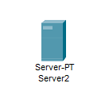
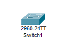
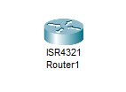
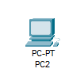

Bem-vindo à aula de REDES!
Hoje farei uma 'videoaula' ensinando a vocês como fazer uma VPN espero que todos vocês já saibam fazer….
Mas, afinal, o que é uma VPN?
A VPN (Virtual Private Network), em português Rede Privada Virtual, possibilita criar uma conexão mais segura e criptografada, fazendo com que dispositivos conectados possam se comunicar sem interferência de terceiros.
Para facilitar a compreensão, pense em uma VPN como um trem bala, porém esse trem bala é particular e invisível. Ninguém consegue ver por onde você passa, e suas coisas (ou seja, seus dados) estão bem guardadas e seguras dentro desse trem.
Agora que já sabemos o que é uma VPN, vamos colocar a mão na massa e começar a configuração!
- Primeiro passo:
Abra o aplicativo Cisco Packet Tracer (caso não tenha use o site skillsforall para instalar) e faça login usando sua conta.
- Segundo passo:
Coloque na área de trabalho:
- Dois servidores 
- Um switch 2960 
- Um roteador ISR4321 
- Dois computadores 
A quantidade de pc's pode variar de acordo com a demanda.
- Terceiro passo:
Antes de começar pra valer, coloque em seu roteador o módulo NIM-2T, isso disponibilizará portas seriais, e conecte todos seus hardwares com fios de cobre retos.
Para configuração do roteador, entre no CLI e insira os seguintes códigos:Router>enable
Router#config tenable(ativa a CLI)config t(acessa o terminal de configurações)
Router(config)#interface gig0/0/0
Router(config-if)#ip address 192.168.1.1 255.255.255.0
Router(config-if)#no shut
Router(config-if)#exitinterface gig0/0/0(acessa as configurações da porta onde está conectada ao switch)ip address 192.168.1.1 255.255.255.0(define endereço de IP e Máscara sub-rede)no shut(Ativa a porta GigabitEthernet0/0/0)exit(sai das configurações da porta onde seu switch está conectado)
Router(config)#interface ser0/1/0
Router(config-if)#ip address 221.10.0.1 255.255.255.0
Router(config-if)#no shut
Router(config-if)#exitinterface ser0/1/0(acessa as configurações da porta serial)ip address 221.10.0.1 255.255.255.0no shut(Ativa a porta serial)exit
Router(config)#router rip
Router(config-if)#network 192.168.1.0
Router(config-if)#network 221.10.0.0
Router(config-if)#exitrouter rip(acessa as configurações do RIP)network 192.168.1.0network 221.10.0.0(cria duas conexões que serão usadas posteriormente)exit
copy run start(define as configurações atuais como padrão).- Quarto passo:
Vamos configurar os servidores. Configure ele com:
- Endereço IP: 192.168.1.10
- Default Gateway: 192.168.1.1
- Servidor DNS: 192.168.1.10
- Default Gateway: 192.168.1.1;
- Servidor DNS: 192.168.1.10;
- Endereço IP inicial: 192.168.1.100;
- Máscara sub-rede: 255.255.255.0;
Configure o DNS, crie um domínio com seu nome e use o mesmo endereço de IP do seu servidor.
Configure o EMAIL, usando o mesmo domínio criado previamente, crie pelo menos dois usuários.
No outro servidor faça o mesmo porém com nomes diferentes.
- Quinto passo:
Agora passando para os computadores.
Na aba de configurações, altere as configurações globais de Gateway/DNS IPv4 para DHCP.Isso fará com que seu computador automaticamente pegue as informações que você configurou em seu servidor.
Caso ele pegue algum número diferente repita os passos anteriores e confirme se todas as portas em uso estão ligadas. - Sexto passo:
Agora, copie e cole todos os componentes que criou, alterando apenas:-
Roteador
- IP porta gig0/0/0 para 192.168.2.1 255.255.255.0
- IP porta ser0/1/0 para 22.10.0.2 255.255.255.0
- Conexão RIP
192.168.1.0para 192.168.2.0
-
Servidor
- Endereço IP para 192.168.2.10
- Default Gateway para 192.168.2.1
- Servidor DNS para 192.168.2.10
-
Nos serviços do servidor
- Default Gateway para 192.168.2.1
- Servidor DNS para 192.168.2.10
- Endereço IP inicial para 192.168.2.100
- Sétimo passo:
Ainda na aba de serviços dos seus servidores, adicione ao DNS os domínios criados nos outro servidores.
Por exemplo, no meu servidor 1 fiz um domínio nomeado 'gustavo1.com' com endereço IP '192.168.1.10'. Então nos servidores 2, 3 e 4 devo adicionar um domínio com esse mesmo nome e esse mesmo IP.
- Oitavo passo:
No seu computador, entre na aba Desktop e procure por Email. Crie um email e use, ao invés do @gmail.com, o seu domínio criado no quarto passo (use o domínio do servidor respectivo a leva).
Ao cadastrar o e-mail, será pedido informações do servidor, os dois espaços em branco deverão ser preenchidos com o nome do seu domínio. A informação de logon deve ser preenchida com o usuário e senha feitos, também, no quarto passo.
Repita esse processo em seus outros computadores, mantendo o nome de domínio do servidor próprio porém com nomes de email diferentes.
- Nono passo:
Usando um cabo serial DCE, conecte o roteador 1 ao roteador 2.
Se tudo deu certo, sua conexão WAN está feita!
Para testar use o prompt de comando de um computador da leva feita a mão e digite:
ping + endereço de IPde um dos computadores da leva feita com copia e cola. No meu caso, digitei: ping 192.168.2.106Outra maneira de testar é entrando em algum computador e digitando em seu navegador de internet o endereço IP designado ao site da outra leva. No meu caso entrei na leva feita a mão e inseri: 192.168.2.10
Router#copy run start
Agora vamos para a parte da VPN!
- Primeiro passo para instalar a VPN:
Adicione mais um roteador ISR4321. E para evitar confusões vamos nomeá-los. O primeiro roteador criado vai ser o r1, o segundo vai ser o r2 e este será o r3.
Não esqueça de adicionar o módulo NIM-2T ao r3!
- Segundo passo:
Será necessário alterar o endereço IP da porta serial do r2.
Mova esse IP para porta serial 0/1/0 do r3 e mova o cabo DCE do r2 para o r3.No r2, redirecione o IP da porta serial para 2.0.0.2, da mesma maneira que foi feito no terceiro passo mas apenas alterando a porta ser0/1/0.
Não esqueça de trocar o RIP de
221.10.0.0para 2.0.0.0. - Terceiro Passo:
No r3, adicionaremos mais um endereço de IP. No CLI insira:
Router3>enable
Router3#config tRouter3(config)#interface ser0/1/1
Router3(config-if)#ip address 2.0.0.1 255.0.0.0
Router3(config-if)#no shutTeste a conexão novamente, das mesmas maneiras do nono passo.
- Quarto passo:
Agora criaremos o túnel, ou trilho para o trem bala.
No r1 acesse CLI e digite:
Router1>enable
Router1#config tRouter1(config)#interface tunnel 10
Router1(config-if)#ip address 172.16.1.1 255.255.0.0
Router1(config-if)#tunnel source ser0/1/0
Router1(config-if)#tunnel destination 2.0.0.2
Router1(config-if)#no shutE no r2 faremos o mesmo mas alterando uns detalhes:
Router2>enable
Router2#config tRouter2(config)#interface tunnel 100
Router2(config-if)#ip address 172.16.1.2 255.255.0.0
Router2(config-if)#tunnel source ser0/1/0
Router2(config-if)#tunnel destination 221.10.0.1
Router2(config-if)#no shutCaso queira testar novamente basta digitar ping e o ip do tunnel.
No r1 por exemplo: ping 172.16.1.2 - Quinto passo:
Por fim faremos uma rota ligando os polos.
No r1:
Router1>enable
Router1#config t
Router1(config)#ip route 192.168.2.0 255.255.255.0 172.16.1.2No r3:
Router3>enable
Router3#config t
Router3(config)#ip route 192.168.1.0 255.255.255.0 172.16.1.1
Pronto! Agora você têm dois sistemas conectados via Wireless com VPN.
Caso tenham alguma dúvida, agora é a hora!